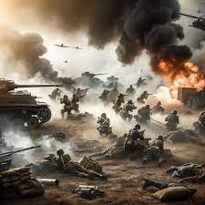

Bonjour, sur ce site je vais vous parler de la seconde guerre mondiale : qui l'a démarrée, qui en faisait partie, les personnes importantes, les évènement majeurs de chaque année, une conclusion, etc.
La Seconde Guerre mondiale, ou Deuxième Guerre mondiale, est un conflit armé à l'échelle planétaire qui dure du 1er septembre 1939 au 2 septembre 1945. Ce conflit oppose schématiquement les Alliés (La Grande-Bretagne, la France, l'URSS, les États-Unis et la Chine) et l'Axe (l'Allemagne nazie, l'Empire japonais et l'Empire italien).
